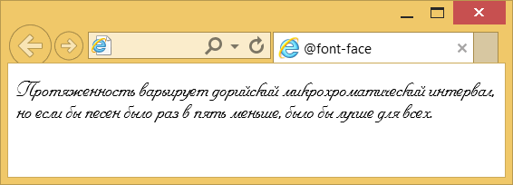

@font-face. [на css3]
Описания
Правило @font-face позволяет определить настройки шрифтов, а также загрузить специфичный шрифт на компьютер пользователя.
Значения
Внутри конструкции @font-face может находиться набор свойств для изменения параметров шрифта (font-family, font-size, font-style и др.), а также ссылка на шрифтовой файл. Ссылка записывается в виде src: url(URI), где URI — относительный или абсолютный путь к файлу.
Свойства
@font-face
Значения
auto : Пользователь может выделить элемент.
none : Пользователю запрещено выделять элемент.
text : Пользователь может выделить текст в элементе.
Пример
@font-face {
font-family: Pompadur; /* Имя шрифта */
src: url(/example/font/pompadur.ttf); /* Путь к файлу со шрифтом */
}
P {
font-family: Pompadur;
}

Примечание
Браузер Internet Explorer до версии 9.0 поддерживает только шрифты формата EOT (Embedded OpenType).
Opera в некоторых случаях может не показывать на веб-странице текст выбранным шрифтом, заменяя его стандартным.
Причём для локальных документов всё работает корректно. Это происходит в тех случаях, когда имя пользователя
в Windows написано кириллицей.
Браузеры
Настольные

Мобильные